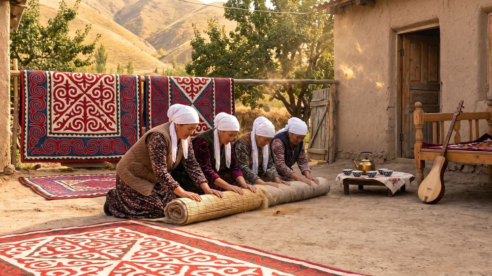

Welcome to the site ofHunarmand
Masters of Iradi crafts · since 2016
Master craftspeople across Irad take apprentices for eighteen months, paid by the Körköm Foundation: 22 masters, 41 apprentices now, 96 finished.
Coppersmiths' Row, Old City
Winter fair · 5 December
Tolugraak · More ›Apply by 15 December
Apprenticeships 2027
Tolugraak · More ›Felt, yurt, saddles, silver
Twenty-two masters
Tolugraak · More ›Winter fair, 5 December, 11:00–18:00 · Coppersmiths' Row, Old City, Talas · free
Children make felt with Zarina Ashyrbek kyzy's apprentices